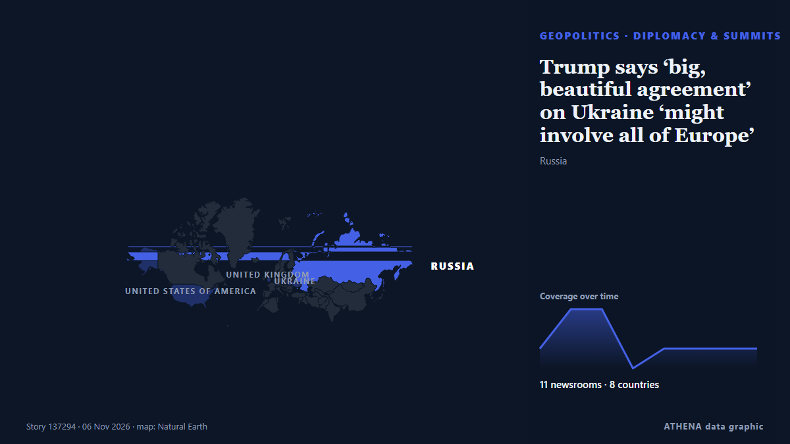

Diplomatie und Gipfel
GesponsertPräsentiert von  Cybernetics and Artificial Intelligence Lab Welcome to the Cybernetics and Artificial Intelligence Laboratory, established at the Department of Business Administration of the National and Kapodistrian University of Athens. The lab is headed by Professor Dimitrios Thomakos. The lab aims to do research that can be published in top venues. Our research uses tools and methods of Artificial Intelligence, and lies in the following areas: - Forecasting - Decision making - Cyber security - Finance We are always looking forward to collaborating with exceptional students!
Cybernetics and Artificial Intelligence Lab Welcome to the Cybernetics and Artificial Intelligence Laboratory, established at the Department of Business Administration of the National and Kapodistrian University of Athens. The lab is headed by Professor Dimitrios Thomakos. The lab aims to do research that can be published in top venues. Our research uses tools and methods of Artificial Intelligence, and lies in the following areas: - Forecasting - Decision making - Cyber security - Finance We are always looking forward to collaborating with exceptional students!
| 24. Okt. | 0 |
|---|---|
| 25. Okt. | 0 |
| 26. Okt. | 0 |
| 27. Okt. | 0 |
| 28. Okt. | 1 |
| 29. Okt. | 0 |
| 30. Okt. | 0 |
| 31. Okt. | 0 |
| 1. Nov. | 2 |
| 2. Nov. | 5 |
| 3. Nov. | 6 |
| 4. Nov. | 1 |
| 5. Nov. | 9 |
| 6. Nov. | 0 |
Schlagzeilen werden auf Englisch angezeigt, wie veröffentlicht.

Trump says ‘big, beautiful agreement’ on Ukraine ‘might involve all of Europe’
British troops are due to take part in a major Coalition of the Willing military exercise to prepare for potential peace. von Evening Standard (London)
Italy’s Meloni blasts Europe’s ‘disarray’ on Ukraine talks
Italian Prime Minister Giorgia Meloni criticizes the European Union’s handling of Ukraine negotiations, labeling it ‘disorderly’ and urging a unified voice. von Arab News
Trump meets Putin envoy Kirill Dmitriev at the White House
The US President predicted there would be a “big agreement” involving more than just Ukraine. von The Straits Times
Iran has no plans for talks with US, says foreign minister
Abbas Araghchi said there is no necessity for a meeting with the US, but consultations are ongoing among mediators. von Free Malaysia Today
Melania Trump meets with Russian and Ukrainian representatives at the White House
WASHINGTON: First Lady Melania Trump will host “representatives” of Russia and Ukraine in Washington, the White House said Tuesday, without specifying a date or offering further details about who may… von Business Recorder
Putin will not attend Britain's G20 summit, UK PM Burnham saysre
LONDON: Prime Minister Andy Burnham has said Russian President Vladimir Putin will not travel to a G20 summit in Britain because of UK sanctions against him, The Economist newspaper reported on… von Business Recorder
Türkiye to continue efforts to bring an end to Russia-Ukraine war: President Erdogan
Turkish president says Ankara will maintain 'close dialogue' with US administration and Congress following midterm election results. von Anadolu Agency (English)
Trump says US will end military aid to Israel by end of the year
Says democrats, left-wing politicians using US financial support to Israel as a talking point to criticise Republicans. von Express Tribune
Morocco will ‘uphold Western Sahara ceasefire after UN mission ends’
Morocco will stay committed to the ceasefire in the occupied Western Sahara despite the end of the United Nations peacekeeping mission in the territory, the Royal Palace said on Wednesday. von Cyprus Mail
European Commission hosts talks on Ukraine's post-war reconstruction
Delegations from Ukraine, Germany, France, UK, US, NATO, World Bank meet in Brussels. von Anadolu Agency (English)
Merz announces November 19 meeting of Coalition of the Willing in Berlin
German Chancellor Friedrich Merz has announced that an in-person meeting of the leaders of the countries participating in the Coalition of the Willing will take place in Berlin on November 19. von Ukrinform (English)
Democrats capture Congress in sweeping setback for Trump
Democrats captured majorities in both the Senate and House on Tuesday, scoring sweeping victories that reached deep into Republican strongholds as tens of millions of voters delivered a scathing… von The Korea Times
Historic win for Democrats in Kansas, Hamilton flips Senate seat after 94 yrs
Democrats flip key Senate seats in traditionally Republican states and are on track to gain dozens of House seats, delivering a major blow to Trump. von Haaretz (English)
Greenland approves security deal with Denmark and US following months of Trump's pressure
ILULISSAT, Greenland (AP) -- Greenlandic lawmakers on Tuesday voted to approve an agreement between the Arctic island, Denmark and the United States t. von Mainichi (English)
Kremlin confirms trilateral talks on Ukraine set for Nov 10-11 in Abu Dhabi
The United States will bring together delegations from Ukraine and Russia in Abu Dhabi on November 10-11 to discuss ending Russia's conflict with Ukraine, post-conflict security agreements and… von CGTN (World)
US, Iran Restore Diplomacy amid Limited Strikes
Iran and the U.S. are reviewing fresh proposals from mediators on how to resolve their differences and avoid a return to all-out war, according to a diplomat briefed on the matter. von Rigzone
Korea, Turkey pledge deeper cooperation on nuclear energy, defense
The leaders of South Korea and Turkey agreed Tuesday to deepen cooperation in nuclear energy and the defense industry while strengthening coordination on peace and stability on the Korean Peninsula… von Korea Herald
China's foreign minister pushes for dialogue to resolve Middle East conflict
BEIJING, Nov 2 (Reuters) - China's Foreign Minister WangYi said on Monday that all parties in the Middle East conflict should focus on political solutions rather than resorting to arms again, in a… von Al-Monitor
US signals progress in talks with Iran to avert renewed war
President Donald Trump said a deal with Tehran 'could happen', as Iran offered to reopen the Strait of Hormuz under strict conditions. von Free Malaysia Today